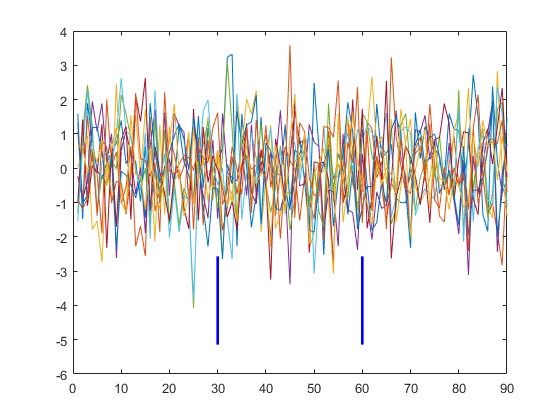
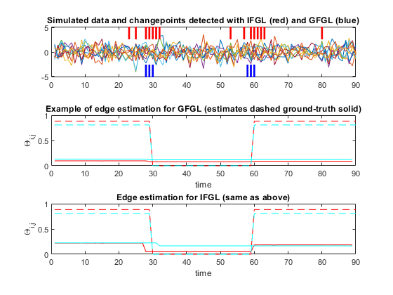
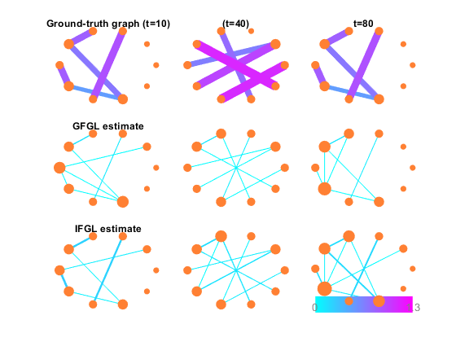

NormalExample - Comparison between GFGL and IFGL in the standard T>P setting
lambda1G - strength of sparsity regulariser for GFGL lambda1I - sparsity for IFGL lambda2G - strength of smoothing for GFGL lambda2I - smoothing for IFGL
This file simulates a data-set and then runs the ADMM solver for IFGL/GFGL problems in an attempt to recover the dynamic sparsity patterns
Alex Gibberd (2015) - UCL Department of Statistical Science
Contents
Note: To run this demo with different paramters simply run the function >>hdDemo(lambda1G,lambda2G,lambda1I,lambda2I);
function [ ] = normalExample(lambda1G,lambda2G,lambda1I,lambda2I)
Set Default parameters
These are selected to illustrate some of the differences between GFGL and IFGL, such that they produce similarly sparse results.
warning('off'); % Overwrite warnings when viewing via publish if(nargin<1) lambda1G=0.35; end if(nargin<2) lambda2G=20; end if(nargin<3) lambda1I=0.25; end if(nargin<4) lambda2I=5; end
Simulate Data
T=90; K=2; scale=1; P=10; M=5; display('Generating ground-truth with following structure:') display(['#changepoints=',int2str(K),', scale=',int2str(scale),... ', T=',int2str(T),', #variables=',int2str(P),... ', #active-edges=',int2str(M)]); % Generate ground-truth precision/covariance matrices % [ sigmainv,sigma ] = genPeriodGraph( P,M,scale,K,T ); GT=load('gtBig.mat'); % Load ground-truth graph sigma=GT.sigma; sigmainv=GT.sigmainv; % [ y ] = simulateData( sigma ); % Generate Data gty=load('yExample.mat'); y=gty.y; % Find true edges [ ~,edges ] = countEdges( squeeze(sigmainv(:,:,1)),0.000001 ); % Extracts true edges at t=1 % Find true changepoints cpPos = cpCluster( sigmainv,0.00001 ); cpGt=find(cpPos~=0); plotCP(cpGt,[],y,0);
Generating ground-truth with following structure: #changepoints=2, scale=1, T=90, #variables=10, #active-edges=5
The graph above gives an idea of the noise structure of our synthetic data. Clearly there are no trends, but there are subtle correlation structures and dependencies between variables which we wish to extract. Changepoints: The ground-truth changepoints are given by the blue lines.
RUN GFGL
As discussed in the paper, our implementation of GFGL is highly dependent on the number of changepoints (K) estimated. Increasing lambda2G decreases the number of estimated changepoints.
display('Running GFGL'); tic [ ThetaG,ZG,cpG,SG,~,~ ] = GFGL( y,lambda1G,lambda2G,10 ); t=toc; display(['GFGL took t=',int2str(t),'seconds to find K=',num2str(length(cpG))]);
Running GFGL GFGL took t=9seconds to find K=6
RUN IFGL
The independent fuseed approach solves for each edge seperately. We make use of the efficient fused lasso signal approximator algorithm within the SLEP package.
tic [ ThetaI,ZI,SI,~ ] = FGL( y,lambda1I,lambda2I,10 ); t=toc; % Find changepoints within IFGL solution cpPos = cpCluster( ZI,0.00001 ); cpI=find(cpPos~=0); display(['IFGL took t=',int2str(t),'seconds to find K=',num2str(length(cpI))]);
IFGL took t=2seconds to find K=15
Output Results
Changepoints and Edge estimates
figure(1) set(gcf, 'Color', [1,1,1]); subplot(3,1,1); plotCP(cpG,cpI,y,0); title('Simulated data and changepoints detected with IFGL (red) and GFGL (blue)'); subplot(3,1,2); coefCompare(edges(1:2,:),ThetaG,sigmainv); title('Example of edge estimation for GFGL (estimates dashed ground-truth solid)'); xlabel('time'); ylabel('\Theta_{i,j}'); subplot(3,1,3); coefCompare(edges(1:2,:),ThetaI,sigmainv); title('Edge estimation for IFGL (same as above)'); xlabel('time'); ylabel('\Theta_{i,j}');
Figure 1 In the case where we have T>P we can see the difference between the GFGL and IFGL estimates more clearly. In the middle and lower panes we can see the estimation of an edge with GFGL and IFGL respectively. Whilst edges in IFGL can change value at different points in time, GFGL changepoints are constrained to coincide across the graph. If the grouped assumption is valid then this aids the estimation of changepoints as depicted in the upper panel.
Note: If one wants to zoom into any of the figures outputed here please consult the appropriate figure panel (these should be created by MATLAB).
Graphical estimation
figure(2) set(gcf, 'Color', [1,1,1]); subplot(3,3,1); plotGraph(squeeze(abs(sigmainv(:,:,10))),10,0); title('Ground-truth graph (t=10)') subplot(3,3,2); plotGraph(squeeze(abs(sigmainv(:,:,40))),10,0); title('(t=40)') subplot(3,3,3); plotGraph(squeeze(abs(sigmainv(:,:,80))),10,0); title('t=80'); subplot(3,3,4); plotGraph(squeeze(abs(ZG(:,:,10))),10,0); title('GFGL estimate'); subplot(3,3,5); plotGraph(squeeze(abs(ZG(:,:,40))),10,0); subplot(3,3,6); plotGraph(squeeze(abs(ZG(:,:,80))),10,0); subplot(3,3,7); plotGraph(squeeze(abs(ZI(:,:,10))),10,0); title('IFGL estimate'); subplot(3,3,8); plotGraph(squeeze(abs(ZI(:,:,40))),10,0); subplot(3,3,9); plotGraph(squeeze(abs(ZI(:,:,80))),10,1);
Figure 2 Again when we have more data to play with (as contrasted with the HD example in hdDemo()) we can recover a better estimate of the dependency structure. For the default parameters both algorithms recover the ground-truth graph to a reasonable extent.
Discussion
We have presented here an example of the kind of models IFGL and GFGL can extract from data. If one simulates a random data-set instead of using the default loaded data, we expect to find much sensitivity in performance, especially with respect to different regularisation factors. The generalisation performance of the GFGL and IFGL routines is discussed much further in the associated paper. Specifically we consider performance not just in one example case, but measuring recovery over a large number of simulated test examples. Due to the computational cost of this cross-validation routine, we avoid giving an example of this, however further code is availiable on request (alexander.gibberd.12@ucl.ac.uk)
end